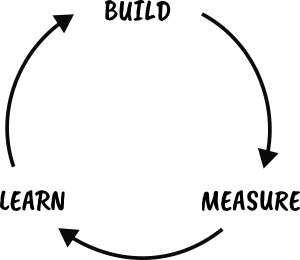

Freelance Web Consulting
I'm a full stack Software Engineer with over fifteen years of commercial experience, ranging from Big Tech to small startups. I specialise in Web Apps and the Web of Things, and am particularly comfortable with full stack web development using HTML, CSS, JavaScript and Node.js. I'm based in the UK and very experienced with remote work.
See Projects for some examples of my past work, and please feel free to get in touch if I can help with anything.
Get in TouchWeb Sites
From a simple static website showcasing your business, to a fully content managed blog, wiki, calendar, forum or online shop - I can help you create your unique presence on the web.
I can hand code you a website using standards-compliant HTML, CSS and JavaScript, and/or use an off-the-shelf open source content management system to give you the right tools you need to reach your users.
Web Apps
As a W3C Invited Expert on Web Applications I have the knowledge and experience to help you create a cross-platform installable web app, with all the power of native mobile and desktop applications.
Modern web apps are responsive, connectivity independent, interactive, fresh, safe, engaging, linkable, discoverable and installable.
Web Things
As the UK's leading expert on the Web of Things and founder of the WebThings open source project, I can help you understand the latest W3C WoT standards, and implement them in your project, product or service.
If you want to create a bespoke connected device, link together different IoT protocols, or implement an app or service which monitors and controls devices over the web, then the Web of Things can provide you with a standards-based and future-proof solution.
My Approach
I recommend taking a lightweight iterative approach to managing a project, to prevent wasting time building something people don't need.
I like to use an agile methodology which involves generating a backlog of user stories, prioritising, estimating and then breaking features down into short iterations of design, implementation and testing. This helps a project to get off the ground quickly and makes it easier to change direction mid-project when necessary.
I can help with all stages of the process including user research, user interface design, front end and back end development, deployment and testing.
I also like to take a lightweight approach when it comes to implementation - preferring hand-crafted standards-based HTML, CSS and vanilla JavaScript, rather than relying on the latest trendy web framework which will quickly become out of date.
A deep understanding of the latest web standards enables me to build rich web-native user experiences which leverage the full power of the web platform and are responsive, engaging and future-proof.
If you would like help building your unique presence on the web, then please get in touch today.
Get in Touch